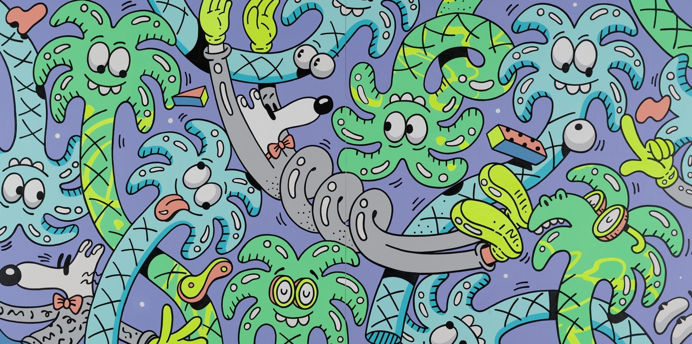
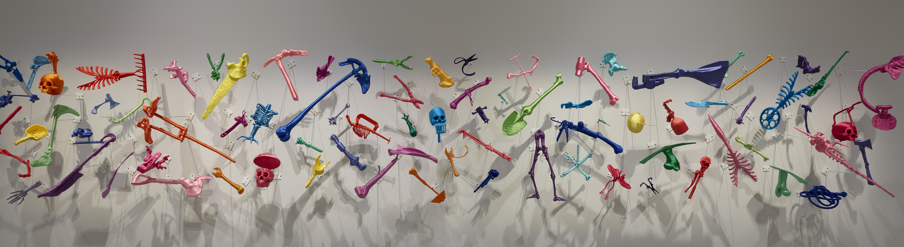

- 
- 
-

- APMA
- APMA, Chapter three from the apma collection
- 강형구,GOGH
- 대형 초상 작업을 하는 강형구는 잡지나 도록에 실린 사진에 상상력을 더하여 미세한 주름, 피부결, 머리카락과 같은 극사실주의적 디테일을 표현하는 작가입니다. 이 작품은 빈센트 반 고흐를 묘사한 초상화로 세상을 등지고 외롭게 싸운 고흐의 인생을 비장한 표정을 통해 드러내었습니다. 맑고 푸른 눈동자는 보는 이로 하여금 얼굴 이면에 있는 존재의 본질과 정신성을 느끼고 교감하게 합니다.

- 더스틴 옐린,
Phychogeography 47
- 미국 출신 조각가 더스틴 옐린(Dustin Yellin, 1975~)은 유리 위에 이미지를 그리거나 잡지에서 오려낸 이미지를 붙인 뒤 그 위로 다시 유리를 쌓아 올리는 방법을 반복해 독특한 입체 조각을 만드는 것으로 잘 알려져 있습니다.이 작품은 바라보는 방향과 거리에 따라 다양한 모습을 보여줍니다. 멀리서 볼 때는 인체 모형으로 짐작하며 작품에 다가가게 되지만, 가까이서 자세히 관찰해보면 작품을 이루는 물체의 이미지나 사람의 얼굴과 같은 세부적인 디테일을 발견할 수 있습니다.
- 윌리엄 켄트리지,쾅!
- 윌리엄 켄트리지(William Kentridge, 1955-)는 식민주의가 남아프리카 공화국에 남긴 역사를 바탕으로 작업합니다. <쾅!>은 그가 감독한 대규모 퍼포먼스 <머리와 짐>의 축소판입니다. 2018년 런던 테이트 모던에서 첫 상연되었던 원작의 제목은 “머리와 짐은 목의 골칫거리다”라는 가나의 속담에서 따온 것이며, 제1차 세계대전 당시 영국, 프랑스, 독일에 의해 강제 징용되어 물자와 무기를 운반한 200만여 명 아프리카인들의 이야기를 보여줍니다.